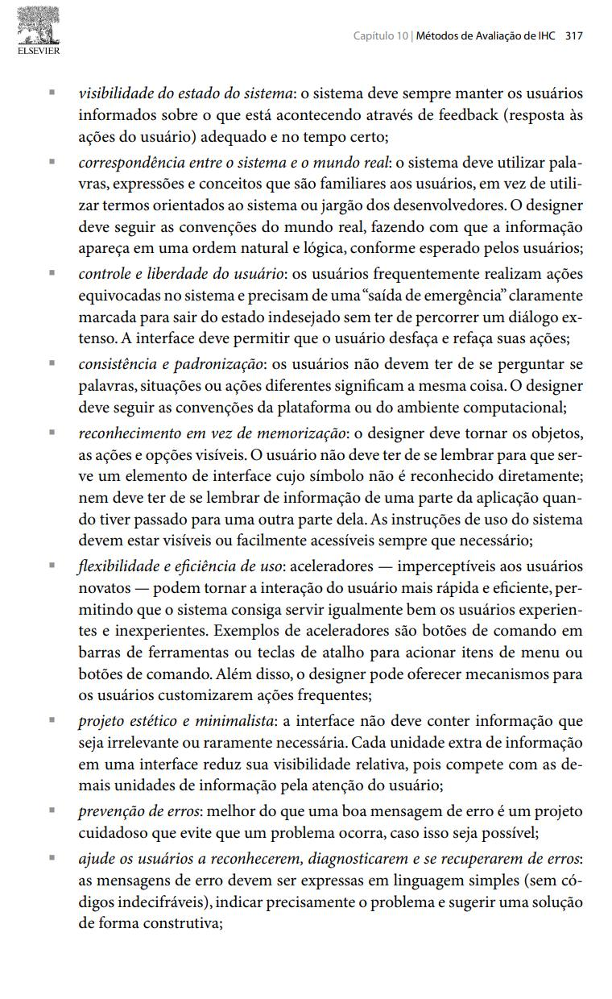
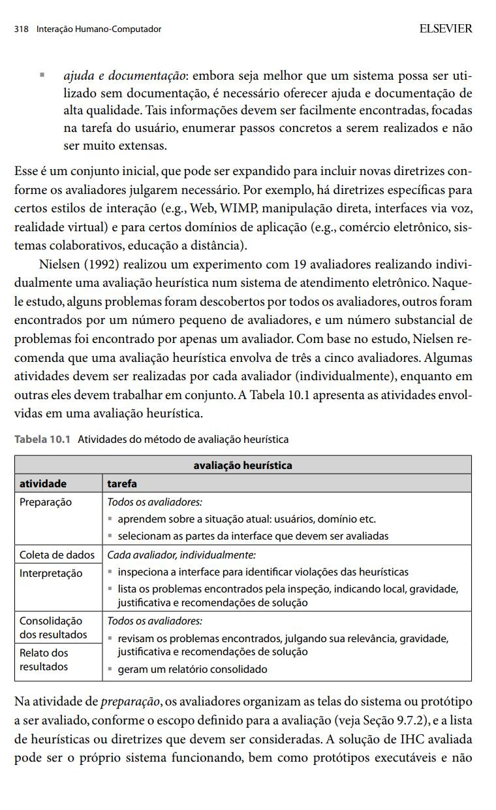
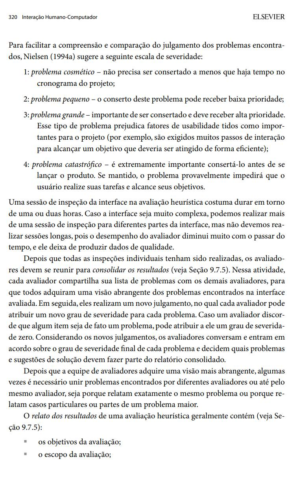
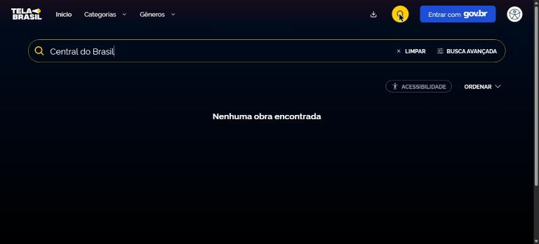
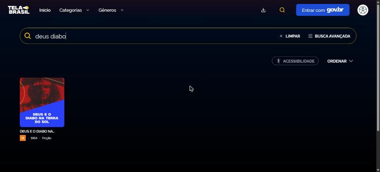
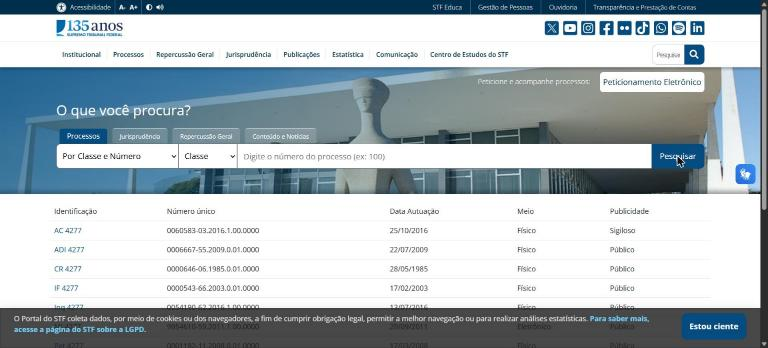
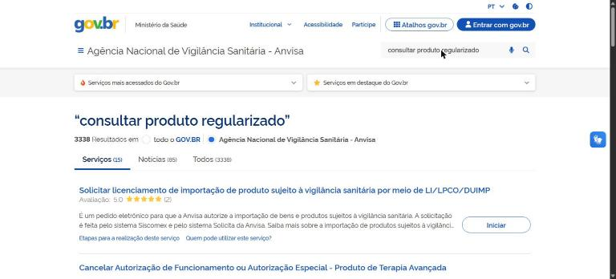
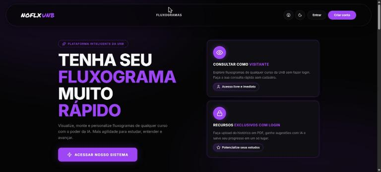
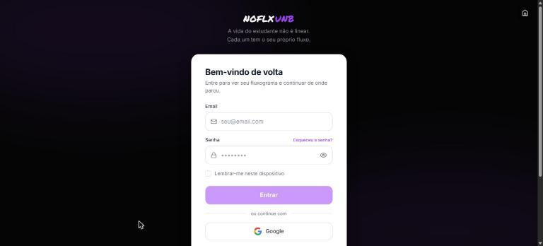

6. Sites avaliados e site selecionado
Autor: Victor Andreozzi de La Rocque Couto · Revisor: Felipe Lopes Pedroza
Entrega: 1, Planejamento do Projeto (parte individual, feita em 27/11/2026 a partir dos artefatos que Victor elaborou em agosto e setembro de 2026) · Funcionalidade de Victor no projeto: Avaliação de Disciplinas
Outros artefatos desta parte: 1. Planejamento do projeto · 2. Equipe · 3. Heatmap de disponibilidade · 4. Ferramentas do projeto · 5. Processo de design · 7. Cronograma das atividades · 8. Verificação com as listas
1. Método
Victor avaliou os cinco sites da lista da Entrega 1 por avaliação heurística, método de inspeção em que o avaliador percorre a interface e anota as violações das heurísticas de Nielsen (Barbosa e Silva, 2010, p. 316 a 320). O planejamento está na 1. Planejamento do projeto, Tabelas 2 e 3. Em cada site, Victor fez uma tarefa curta, típica do público do site, e anotou cada problema com a heurística violada, o local, a severidade e a justificativa (Barbosa e Silva, 2010, p. 319). As Figuras 5 a 7 mostram os trechos do livro usados.

Fonte: BARBOSA, S. D. J.; SILVA, B. S. Interação Humano-Computador. Rio de Janeiro: Elsevier, 2010. Página: 317, Capítulo 10, Métodos de Avaliação de IHC, Seção 10.1.1 Avaliação Heurística.

Fonte: BARBOSA, S. D. J.; SILVA, B. S. Interação Humano-Computador. Rio de Janeiro: Elsevier, 2010. Página: 318, Capítulo 10, Métodos de Avaliação de IHC, Seção 10.1.1 Avaliação Heurística.

Fonte: BARBOSA, S. D. J.; SILVA, B. S. Interação Humano-Computador. Rio de Janeiro: Elsevier, 2010. Página: 320, Capítulo 10, Métodos de Avaliação de IHC, Seção 10.1.1 Avaliação Heurística.
2. Sites avaliados
| Site | Domínio | Tarefa | Resultado do acesso |
|---|---|---|---|
| Tela Brasil | Audiovisual (catálogo gratuito do Ministério da Cultura) | Achar um filme pela busca (“Central do Brasil” e “deus diabo”) | Tarefa concluída com “deus diabo”; “Central do Brasil” não está no catálogo |
| Portal do STF | Justiça | Consultar um processo pelo número (4277) | Tarefa concluída |
| Portal da Anvisa | Saúde | Achar a consulta de produto regularizado pela busca do site | Tarefa não concluída pela busca |
| Portal do Inep | Educação | Achar os microdados do Enem pela busca do site | Tarefa não concluída pela busca |
| NoFluxo UnB | Vida acadêmica (UnB) | Consultar um fluxograma como visitante, sem login | Tarefa não concluída: o botão principal leva ao login |
Fonte: Victor Andreozzi de La Rocque Couto (2026).
3. Problemas encontrados
A Tabela 11 lista os problemas, com a severidade da escala de Nielsen (Figura 7): 1 cosmético, 2 pequeno, 3 grande, 4 catastrófico. As Figuras 8 a 14 são as capturas de tela feitas durante a inspeção.
| Código | Site e local | Heurística violada | Sev. | Justificativa | Recomendação |
|---|---|---|---|---|---|
| PS-01 | Tela Brasil, busca sem resultado (Figura 8) | Ajude os usuários a reconhecerem, diagnosticarem e se recuperarem de erros | 2 | A busca por um filme fora do catálogo mostra só “Nenhuma obra encontrada”, sem dizer se o termo está errado ou se a obra não existe, e sem sugerir outras obras | Explicar que a obra não está no catálogo e sugerir obras parecidas ou a busca avançada |
| PS-02 | Tela Brasil, cartão do resultado (Figura 9) | Reconhecimento em vez de memorização | 1 | O título aparece cortado (“DEUS E O DIABO NA…”), e o usuário precisa abrir a obra para confirmar qual é | Mostrar o título inteiro em duas linhas |
| PS-03 | STF, resultado da busca de processo (Figura 10) | Visibilidade do estado do sistema | 2 | Depois de pesquisar, o número digitado some do campo e a lista não repete o termo buscado; o usuário não confirma o que pesquisou | Manter o termo no campo e mostrar “Resultados para 4277” |
| PS-04 | STF, lista de resultados (Figura 10) | Correspondência entre o sistema e o mundo real | 2 | Os processos aparecem por siglas de classe (AC, ADI, CR, IF, Inq) sem explicação, jargão de quem é da área | Mostrar o nome da classe ao lado da sigla |
| PS-05 | STF, rodapé da página | Projeto estético e minimalista | 1 | O aviso de cookies fica fixo sobre os resultados até ser fechado | Aviso menor ou que some ao rolar a página |
| PS-06 | Anvisa, resultado da busca (Figura 11) | Correspondência entre o sistema e o mundo real | 3 | A busca por “consultar produto regularizado” traz 3.338 resultados e o primeiro serviço é sobre licenciamento de importação, não a consulta procurada | Ligar os termos que o cidadão usa ao serviço de consulta |
| PS-07 | Anvisa, página inicial | Controle e liberdade do usuário | 2 | Ao abrir, um balão do gov.br e o aviso de cookies aparecem juntos e escurecem a página antes de qualquer ação | Mostrar um aviso por vez |
| PS-08 | Inep, resultado da busca (Figura 12) | Correspondência entre o sistema e o mundo real | 3 | A busca por “microdados enem” abre na aba Serviços, com um resultado, “Fazer o Enem” (inscrição); os outros resultados ficam em abas fechadas | Abrir em “Todos” ou destacar a página de microdados |
| PS-09 | NoFluxo UnB, página inicial e login (Figuras 13 e 14) | Consistência e padronização | 3 | A página inicial promete “Consultar como visitante, sem fazer login”, mas o botão principal “Acessar nosso sistema” leva à tela de login | Levar o botão à consulta como visitante e deixar o login como segunda opção |
| PS-10 | NoFluxo UnB, menu superior | Visibilidade do estado do sistema | 2 | No teste, o clique em “Fluxogramas” não mudou a tela nem deu retorno | Dar retorno ao clique ou abrir a lista de cursos |
Fonte: Victor Andreozzi de La Rocque Couto (2026).

Fonte: captura de tela de Victor Andreozzi de La Rocque Couto em 27/11/2026, a partir de <https://telabrasil.cultura.gov.br/busca>.

Fonte: captura de tela de Victor Andreozzi de La Rocque Couto em 27/11/2026, a partir de <https://telabrasil.cultura.gov.br/busca>.

Fonte: captura de tela de Victor Andreozzi de La Rocque Couto em 27/11/2026, a partir de <https://portal.stf.jus.br>.

Fonte: captura de tela de Victor Andreozzi de La Rocque Couto em 27/11/2026, a partir de <https://www.gov.br/anvisa/pt-br>.
Fonte: captura de tela de Victor Andreozzi de La Rocque Couto em 27/11/2026, a partir de <https://www.gov.br/inep/pt-br>.

Fonte: captura de tela de Victor Andreozzi de La Rocque Couto em 27/11/2026, a partir de <https://no-fluxo.crianex.com>.

Fonte: captura de tela de Victor Andreozzi de La Rocque Couto em 27/11/2026, a partir de <https://no-fluxo.crianex.com/login>.
Pontos positivos anotados: a busca do Tela Brasil aceita parte do título (“deus diabo” achou o filme) e tem botão de acessibilidade; os portais do STF, da Anvisa e do Inep têm opção de contraste, ajuste do tamanho da letra e tradução para Libras (VLibras); o NoFluxo UnB tem modo claro e escuro e botão de acessibilidade.
4. Critérios de escolha e notas
Para escolher o site, Victor usou cinco critérios. Os três primeiros vêm da triagem do grupo (página de sites do planejamento): diversidade de domínio, relevância e acesso da equipe ao produto. Os dois últimos vêm da avaliação acima. Cada critério recebe nota de 0 a 2.
| Critério | Pergunta | 0 | 1 | 2 |
|---|---|---|---|---|
| C1 Acesso ao produto | A equipe pode mudar o produto e falar com quem decide? | Não | Só sugerir | Sim |
| C2 Acesso aos usuários | A equipe alcança usuários reais para as avaliações das Entregas 4 a 7? | Não | Com dificuldade | Sim, colegas da UnB |
| C3 Problemas a resolver | A avaliação achou problemas de severidade 2 ou 3? | Nenhum | Só severidade 1 e 2 | Severidade 3 |
| C4 Relação com a disciplina | O tema faz parte da vida dos estudantes de IHC? | Não | Em parte | Sim |
| C5 Disponibilidade | O site estava no ar em 27/11/2026? | Não | Com falhas | Sim |
Fonte: Victor Andreozzi de La Rocque Couto (2026).
| Site | C1 | C2 | C3 | C4 | C5 | Total (0 a 10) |
|---|---|---|---|---|---|---|
| Tela Brasil | 0 | 0 | 1 | 0 | 2 | 3 |
| Portal do STF | 0 | 0 | 1 | 0 | 2 | 3 |
| Portal da Anvisa | 0 | 0 | 2 | 0 | 2 | 4 |
| Portal do Inep | 0 | 1 | 2 | 1 | 2 | 6 |
| NoFluxo UnB | 2 | 2 | 2 | 2 | 2 | 10 |
Fonte: Victor Andreozzi de La Rocque Couto (2026).
5. Site selecionado
O NoFluxo UnB teve a maior nota (10 de 10) e é o site do projeto, a mesma escolha do grupo na Entrega 1, agora com avaliação. As razões:
- é um produto da própria equipe, então os protótipos das Entregas 6 e 7 podem virar mudanças reais (C1);
- os usuários são estudantes da UnB, que a equipe alcança para as avaliações com usuários (C2);
- a avaliação já achou problemas de severidade 3, como o PS-09, em que a promessa de consulta sem login não se cumpre no botão principal (C3);
- o Inep foi o segundo colocado (6 de 10): é da área de educação, mas a equipe não tem acesso ao produto nem a quem decide sobre ele.
A funcionalidade de Victor, a Avaliação de Disciplinas, parte desse diagnóstico: o estudante que consulta o fluxograma também precisa saber como foi a disciplina para quem já a cursou.
6. Referências
- BARBOSA, Simone Diniz Junqueira; SILVA, Bruno Santana da. Interação Humano-Computador. Rio de Janeiro: Elsevier, 2010.
- MINISTÉRIO DA CULTURA. Tela Brasil. Disponível em: <https://telabrasil.cultura.gov.br>; SUPREMO TRIBUNAL FEDERAL. Portal do STF. Disponível em: <https://portal.stf.jus.br>; AGÊNCIA NACIONAL DE VIGILÂNCIA SANITÁRIA. Portal da Anvisa. Disponível em: <https://www.gov.br/anvisa/pt-br>; INSTITUTO NACIONAL DE ESTUDOS E PESQUISAS EDUCACIONAIS ANÍSIO TEIXEIRA. Portal do Inep. Disponível em: <https://www.gov.br/inep/pt-br>; NOFLUXO UNB. Disponível em: <https://no-fluxo.crianex.com>. Acessos em: 27 nov. 2026.
- GRUPO 02. Entrega 1: Planejamento do Projeto (documento do grupo, versões 1.0 a 1.3). Universidade de Brasília, 2026. Disponível em: <https://interacao-humano-computador.github.io/2026.2-Grupo02/entrega1.html>.
Histórico de versão
| Versão | Data | Descrição | Autor(es) | Revisor(es) | Declaração de ferramenta de IA |
|---|---|---|---|---|---|
| 1.0 | 27/11/2026 | Parte individual da Entrega 1: avaliação heurística dos cinco sites, oito problemas com severidade, critérios com notas e justificativa da escolha do NoFluxo UnB | Victor Andreozzi de La Rocque Couto | Felipe Lopes Pedroza | Claude (Anthropic): organização das páginas, redação das tabelas a partir dos artefatos de Victor na Entrega 1 (equipe, heatmap e cronograma), levantamento das datas no histórico do repositório e captura das telas dos sites; a escolha dos critérios, as notas e as conclusões são do autor |